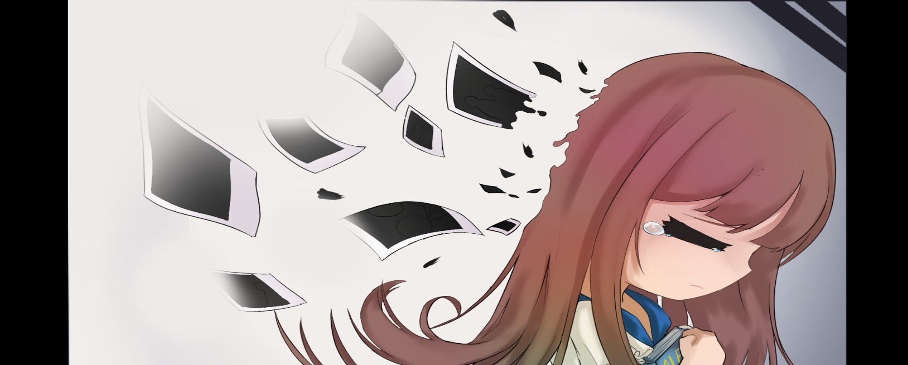
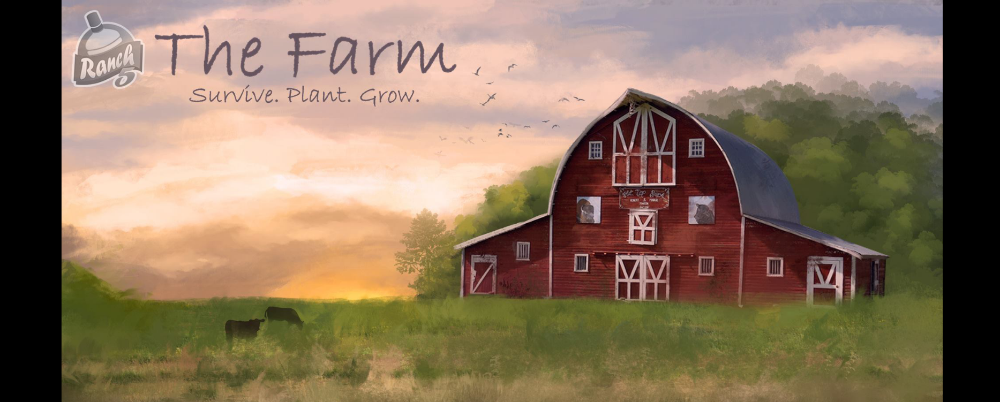
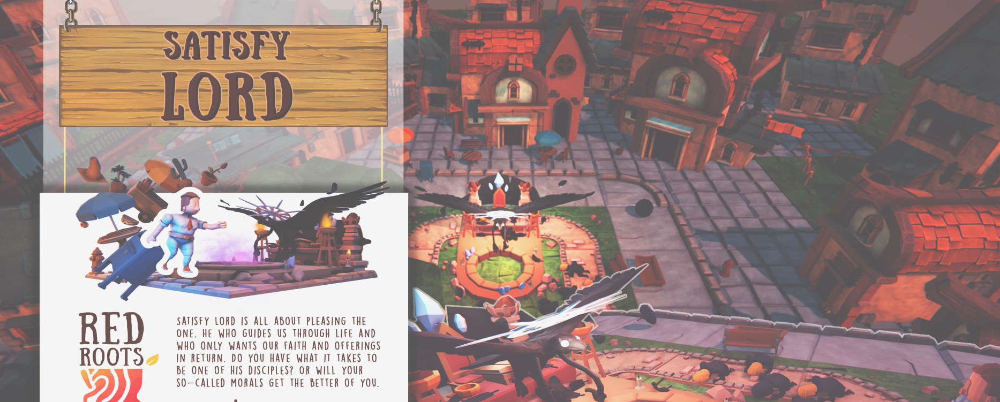
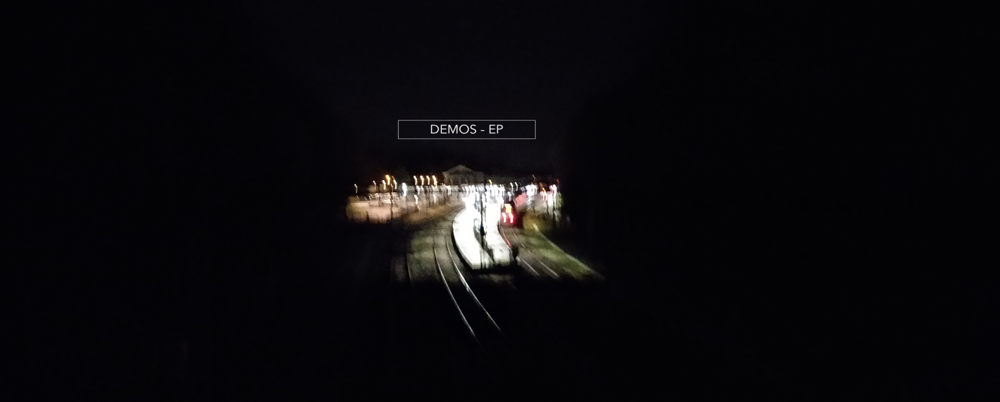
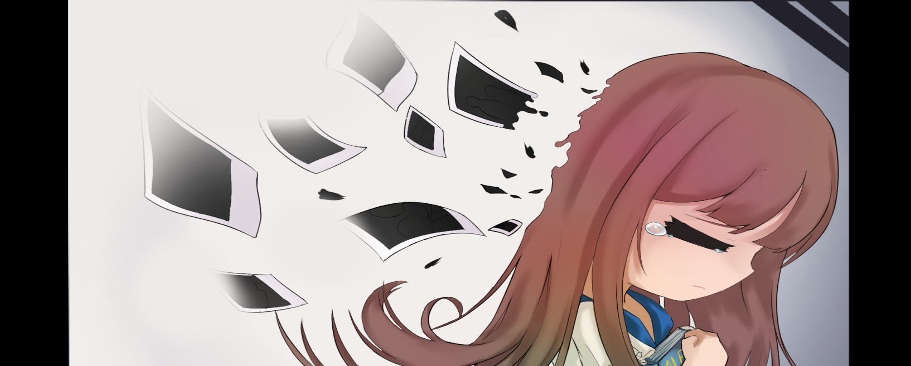
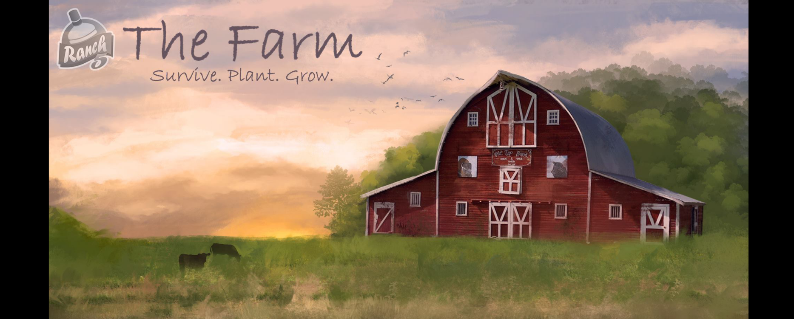
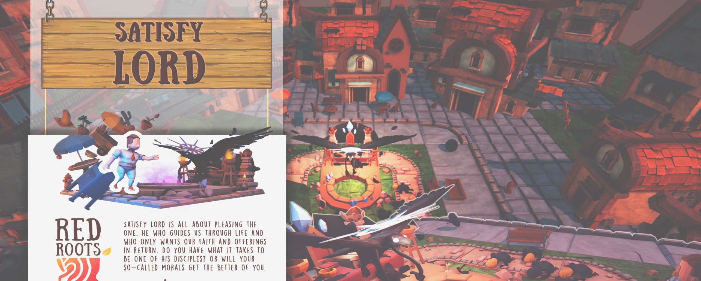
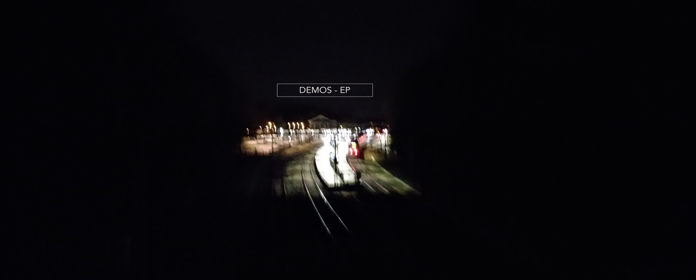
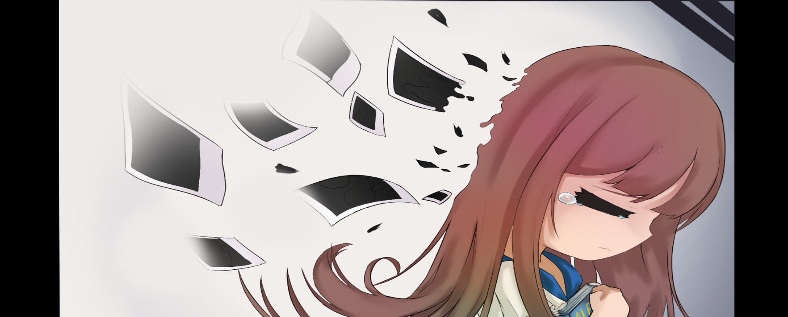
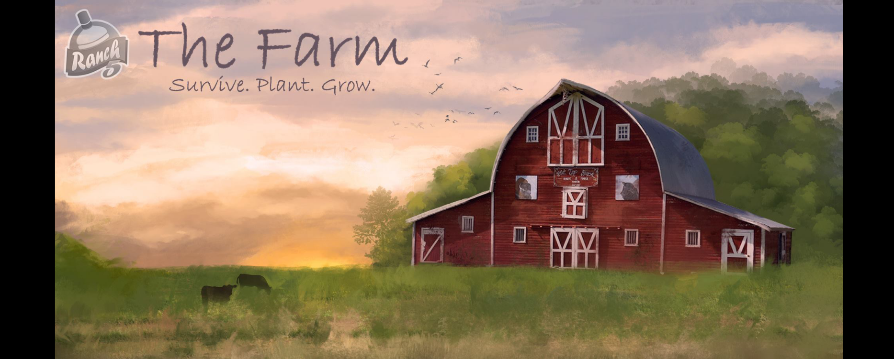
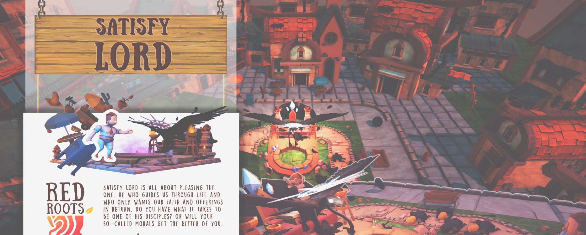
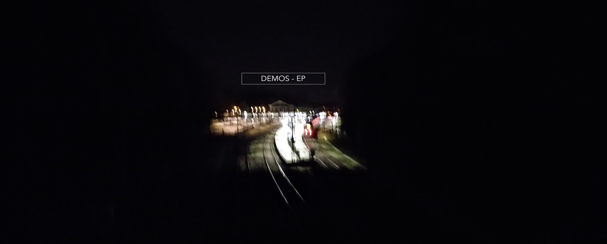
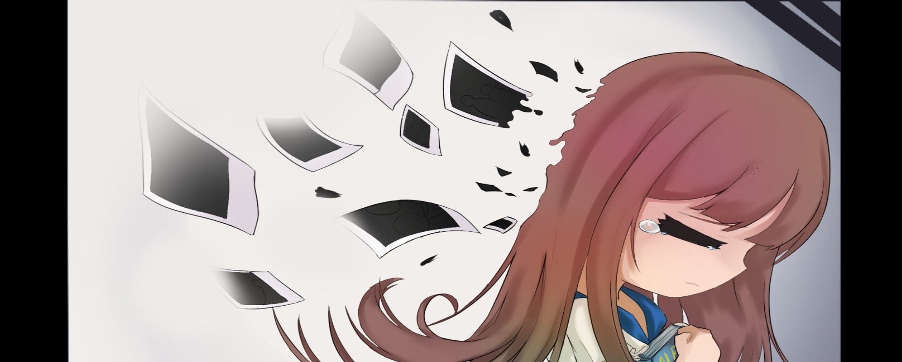
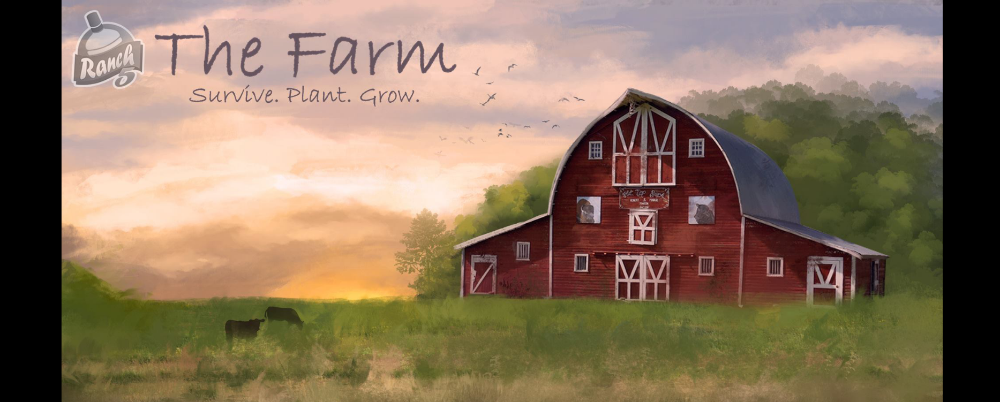
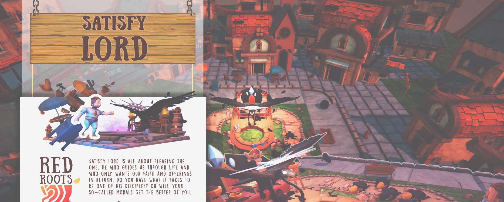
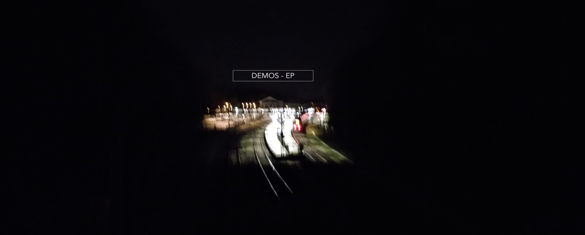
Composer, sound designer and (audio) software programmer. Currently a student at the University of the Arts Utrecht, studying Music and Technology.
for games, films, tv and other media.
for games, films, tv and other media.
audio-plugins, applications, etc.
Music for an applied game, created at a game jam at Pohang University in South Korea.
For this game jam we formed 15 teams with 4 or 5 students from Korea, Japan, China and the Netherlands.
We were then all given 48 hours to create an applied game about the topic: Dementia.
download the game
Music made for 2 games made for the Imagine Film Festival in EYE Amsterdam.
full soundtrack on Soundcloud
A piece written for string quartet.
Performed by Keuris Ensemble: Bob van der Ent (1st violin), Casper Donker(2nd violin), Ian de Jong(viola), Rebecca Smit(cello) and Henry Kelder (artistic leader)
A desktop application which generates music based on your drawing.
Check it out on my GitHub
This app is still under development. Here is an early example of what it sounds/looks like.